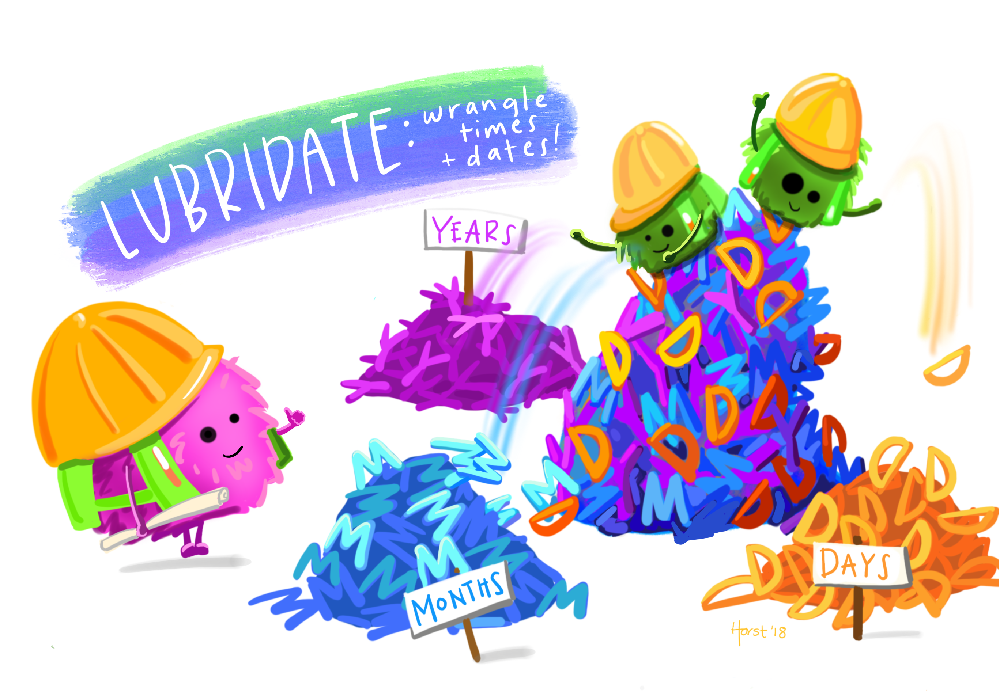

gbd_full %>%
# also filtering for a single year to keep the result concise
filter(year == 1990) %>%
filter(cause == "Communicable diseases" | cause == "Non-communicable diseases")How to explore data?
In this topic, we are focusing on getting our data ready for analysis and reporting. We will cover how to:
Interrogate and check the data for inaccuracies (explore)
Change the format and transform the data (tidy)
Visualise and clean the data (prepare).
You might also find this type of task referred to as data wrangling. You can expect to spend as much as 80% of your time on this part of the process, sometimes more!

We are continuing to use one of the datasets available from Public Health Scotland:
We’re also going to be using the Global Burden of Disease (GBD, or gbd in lowercase), which includes information on the causes of death globally. What we will be using is the number of deaths for the three broad cause categories - Injuries, Communicable diseases, and Non-communicable diseases. But the project and its freely available datasets also include much more detailed breakdowns, both in the types of diseases, countries, as well as different metrics. It is freely available from here:
Here are the functions we’ll be covering in the topic videos:
- base::library() we’re already familiar with for loading packages
- base::names() allows us to view all the column names or variables in our dataet
- dplyr::distinct() for exploring the unique values in our columns or variables
- dplyr::filter() allows us to subset data by filtering out rows based on variable criteria
- dplyr::select() allows us to subset data by selecting specific columns or variables
- dplyr::glimpse() provides information on dimensions, data types and a small preview
- dplyr::arrange() & dplyr::desc() lets you sort your data (default is ascending order)
- tidyr::pivot_longer() lengthens the data, increasing rows and decreasing columns
- tidyr::pivot_wider() widens the data, increasing columns and decreasing rows
- dplyr::mutate() for changing or adding columns
- stringr::str_replace() for finding and replacing strings (text) in your data
- ggplot2::ggplot() & ggplot2::aes() lets R know you are about to make a plot and what you’re going to plot
- ggplot2::geom_point() lets R know you want to make a scatter plot
- base::replace() for finding and replacing values in your data


Explore Data
The main package we will be using to explore the data is dplyr, which is part of the tidyverse. Watch the following video to learn about some of the functions for carrying out your initial exploration of your data.
If you want to recreate the following session on your own computer, you can download the cancelled_operations project folder here: cancelled_operations.zip
Note: To open the project, make sure to “unzip” or “extract all” from the folder, before clicking on the cancelled_operations.Rproj file to open the project in RStudio.
Alternatively, here is the individual cancelled_messy file: phs_cancelled_messy.Rda Note: To load the data, find the file on your computer, double click to open (select RStudio if prompted, and select “yes” to loading into your Global Environment).

Tidy Data
Watch the following video to learn about some of the functions for reshaping your data so that you can get it into a format which makes it easy to plot.
If you want to recreate the following session on your own computer, you can download the cancelled_operations project folder here: cancelled_operations.zip Note: To open the project, make sure to “unzip” or “extract all” from the folder, before clicking on the cancelled_operations.Rproj file to open the project in RStudio.
Alternatively, here is the individual cancelled_messy file: phs_cancelled_messy.Rda Note: To load the data, find the file on your computer, double click to open (select RStudio if prompted, and select “yes” to loading into your Global Environment).

Download the video transcript link here
As described in the video, and visualized below, in a tidy dataset (a) each variable forms a column, (b) each observation forms a row, and (c) and each cell is a single measurement.


Prepare Data
In this video we’re going to take a first look at visualising our data as a way of exploring it and looking for outliers, or mistakes.
If you want to recreate the following session on your own computer, you can download the cancelled_operations project folder here: cancelled_operations.zip Note: To open the project, make sure to “unzip” or “extract all” from the folder, before clicking on the cancelled_operations.Rproj file to open the project in RStudio.
Alternatively, is the individual cancelled_tidy file: phs_cancelled_tidy.Rda Note: To load the data, find the file on your computer, double click to open (select RStudio if prompted, and select “yes” to loading into your Global Environment).

Download the video transcript link here
Other Useful Functions and Operations
Here are some other useful functions and operators you might find useful when wrangling with data.
The c() combine function and the %in% operator
The combine function, as you may well have guessed, is useful for combining several values: c(). We do this by listing the different elements between the brackets, separated by a comma. Text has to be within inverted commas.
The c() function crops up all over the place, for example, in functions where we want to list multiple values as the input to one argument. But it is particularly useful for filtering data.
When combined with the special type of operator, the %in% operator, it can save us extra typing and make our code more readable. We use the %in% operator to identify if a value or set of values appears within another set of values.
Let’s quickly recap how we might filter data if we didn’t know about %in% operator.
If we were interested in filtering our GBD dataset to only include “Communicable” and “Non-communicable” diseases, we might use the following code:
Which produces the following output:
This works perfectly well, but what if we had a column where we wanted to look at data on a whole list of values. Perhaps we have a column with Health Boards and we want to look at data on all those on the East of Scotland. We would have to repeat | HBName == for each value.
This is where the %in% operator and c() function can save us some typing, see the following code which gives exactly the same output as our previous code:
gbd_full %>%
# also filtering for a single year to keep the result concise
filter(year == 1990) %>%
filter(cause %in% c("Communicable diseases", "Non-communicable diseases"))Which produces the following output:
The paste() function for joining values together
We’ve just explored the c() function which allows values to be “combined” but they are not actually joined to make a new variable, they remain separate.
If we want to make a new character variable by joining other variables together, we need to use the paste()function.
The paste() function allows us to paste several variables (e.g. words, numbers, or dates) into one character variable or sentence.
For example, we might want to create a new column with text which could be used as a label:
# create a new column
gbd_full %>%
mutate(year_label_paste = paste("Year is", year))Which produces the following output:
In the paste() function we need to specify each element we would like to combine, separated by a comma. By default, the separation between the elements is a space, but we can change this using the sep = argument within the paste function.
Note: For more informtion on this, try looking the function up in the help tab in RStudio, either by pressing F1 when the cursor is within the function name, or by search in the Help tab search box.
The pull() function or the extract operator
We’ve seen how to use the select() function to select a specific column or columns from a dataset. The type of object we get out is the same as the type we put in, just smaller, so if we pipe a tibble (the name for a tidyverse data frame) into select(), we get a smaller tibble out.
Sometimes however we might need our output to be in a slightly different format, we might need it to be a vector, which we can think of as a simple list of values.
We can get a vector, either by using the base R extract operator $, or we can use the pull() function from the dplyr package.
Let’s see how both of these work:
# $ operator
gbd_full$deaths_millions
# pull() function
gbd_full %>%
pull(deaths_millions)R will give us all the data for that variable - as seen in the following output:
The round() function
Not surprisingly, we can use the round() function from base R to round variables to create integers.
For example, in the GBD dataset we might want to round the total deaths column (deaths_millions) to no decimal places.
# round to whole number
round(gbd_full$deaths_millions) Which produces the following output:
Note: Here we use the $ sign to specify which column from the gbd_full dataset we wanted. We did not pipe (%>%) gbd_full into round() because the first argument in this base R function is looking for a numeric vector (a list of numbers) rather than the name of a tibble or data frame, which is what we are more used to seeing in the tidyverse functions.
Other Useful Packages
lubridate
Dates can often be a bit of a nightmare. They can come in many different formats and are prone to error and so can be awkward to work with. In the “Import Excel” video in the last topic we saw that R wasn’t able to recognise the date column when we used the Import Wizard.
Thankfully, like many problems in R, there is a package for just this issue and it’s called the lubridate package. It’s a tidyverse package which makes it easy to work with dates.
Here is a quick taster, you can:
- parse (read in) a very wide range of formats with the
ymd()function - extract the relevant parts from your dates with
year()andmonth()functions - easily calculate time intervals with the
interval()function


janitor
Cleaning and tidying our data takes up a considerable amount of valuable time, but there’s one function which can help to make our lives a little bit easier when we’re going round the bend trying to fix badly named variables. It’s the clean_names() function from the janitor package.
The clean_names() function converts your variables into snake case style. This just means that it replaces all capital letters, punctuation and spaces with underscores to make the variables easier to work with because R doesn’t like your column headers to have spaces in them or weird characters and symbols.